美修双11
心动榜
围绕“双11心动榜”构建产品投票、任务获取心心、抽奖和榜单公布的活动闭环。用户支持产品参与品类排名，并根据参与进度获得抽奖机会与实物、虚拟等奖励。
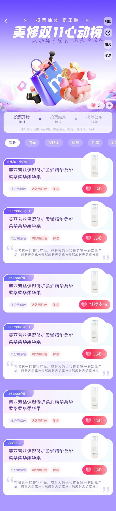
活动主线与交互步骤
01 / 投票到领奖页面围绕三个时间节点管理活动状态：投票开始时支持产品并积累心心，投票结束后保留等待反馈，榜单公布后展示最终排名；任务、抽奖与奖品页承接参与后的激励和履约。
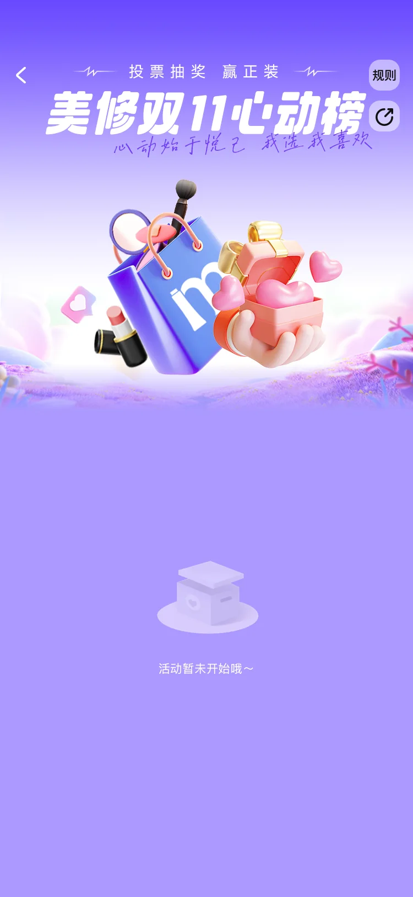
保留活动主视觉与规则入口，以缺省状态说明活动暂未开放。
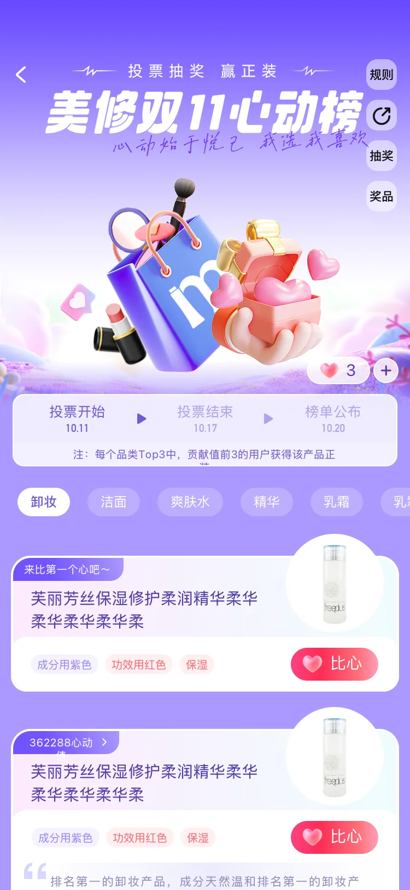
时间轴切换至投票状态，心心数量、品类筛选和产品卡同时开放。

弹窗提供加减数量控件，明确剩余心心和本次支持对象。
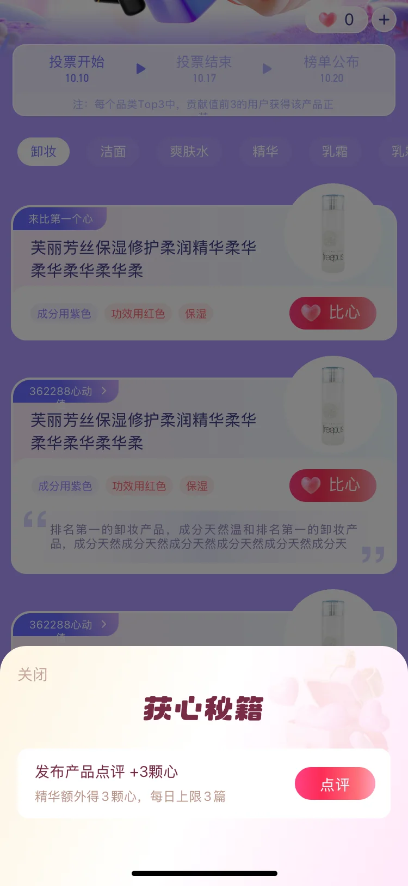
通过产品点评等任务补充心心，形成投票资源的获取路径。
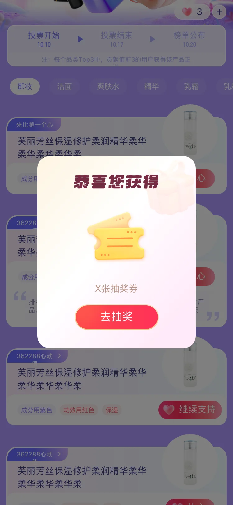
完成参与动作后用奖励弹窗确认抽奖资格，并直接引导进入抽奖。
以街机抽奖形式集中呈现积分、优惠券和随机正装等奖池。
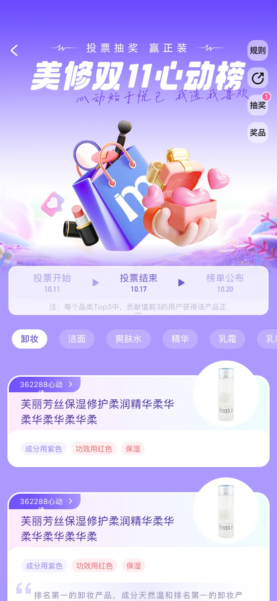
投票时间结束后按钮撤销，页面保留阶段信息并等待最终榜单。
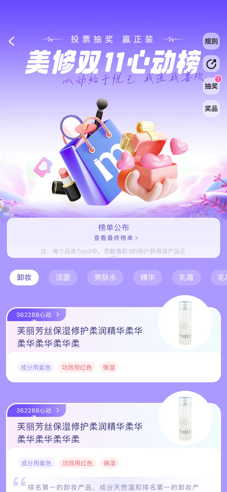
将时间轴推进至公布节点，打开最终榜单并延续奖品入口。
关键状态与 UI 细节
02 / 反馈系统比心、抽奖与奖品使用同一套渐变遮罩和圆角弹窗建立关键反馈。数量边界、资源不足、成功 toast 和奖品类型拆分为独立状态，让每个参与动作都有明确结果。
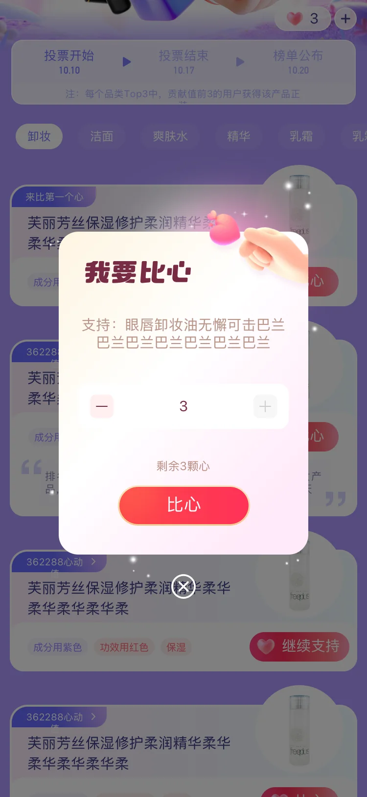
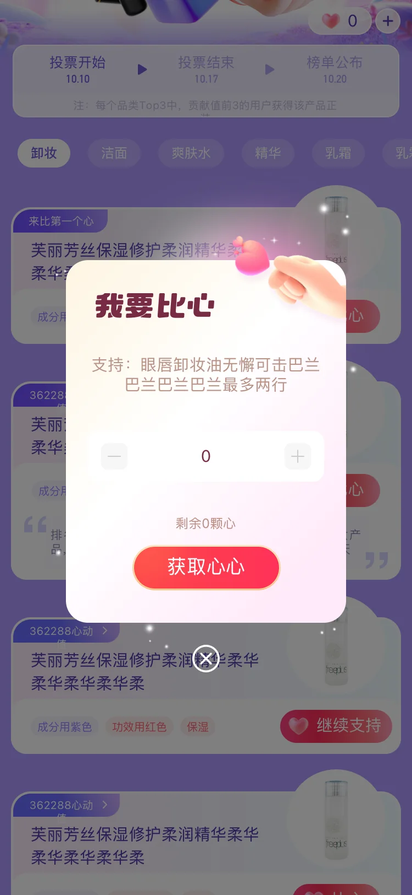
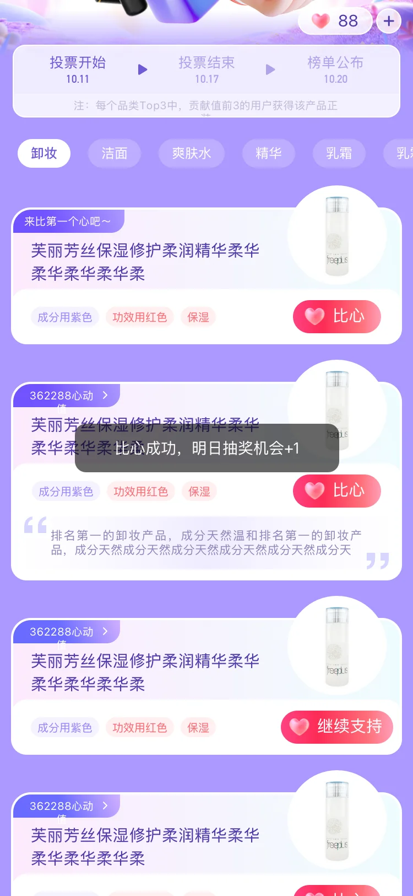
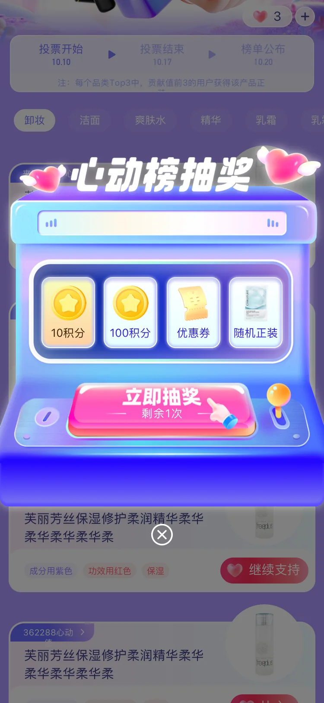
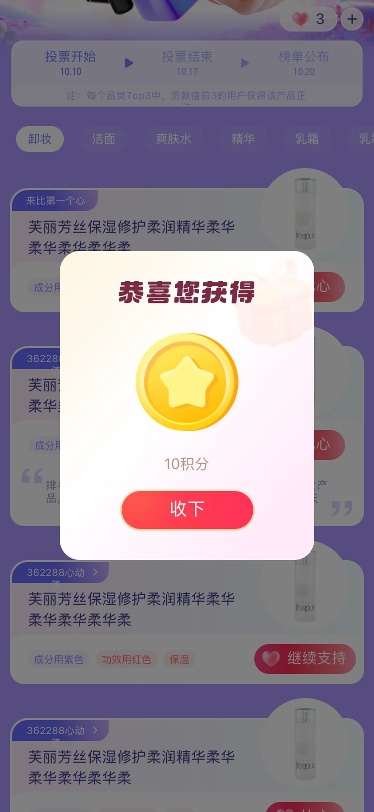
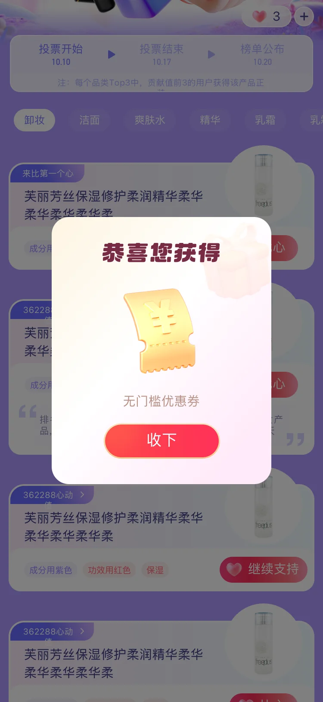


同一时间轴在未开始、进行中、结束和公布阶段切换高亮状态，帮助用户理解当前可执行的操作。
比心弹窗同步呈现剩余心心、数量上限和获取入口，避免用户在操作后才发现资源不足。
积分、优惠券、实物及品类 Top3 奖励分别给出对应确认和下一步动作，连接抽奖与领奖。
排行榜与各品类榜单
03 / 榜单内容排行榜以“心动值”呈现用户支持贡献，并保留当前位置与未上榜提示；品类榜单将洁面、化妆水、精华和乳霜等结果组织为独立分区，提供持续浏览的产品内容页。
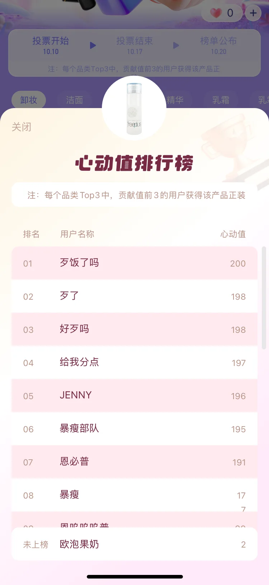
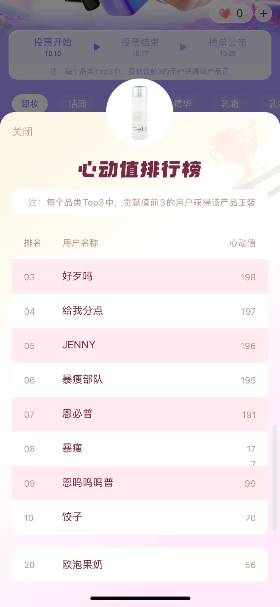
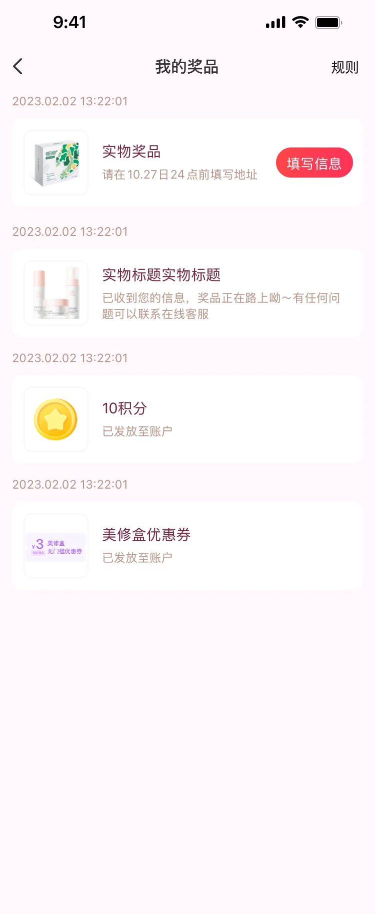
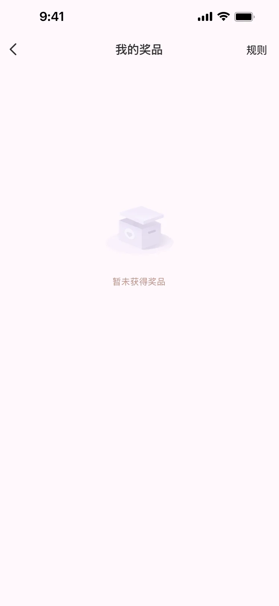
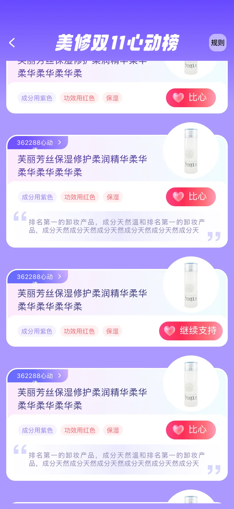
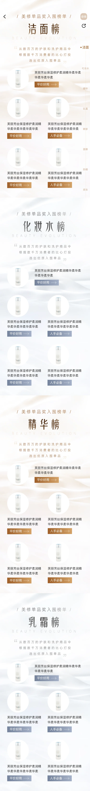
项目页按活动状态、投票支持、任务与抽奖、榜单公布和奖品管理的用户路径整理，集中呈现双11打榜活动的页面、榜单和交互状态设计。